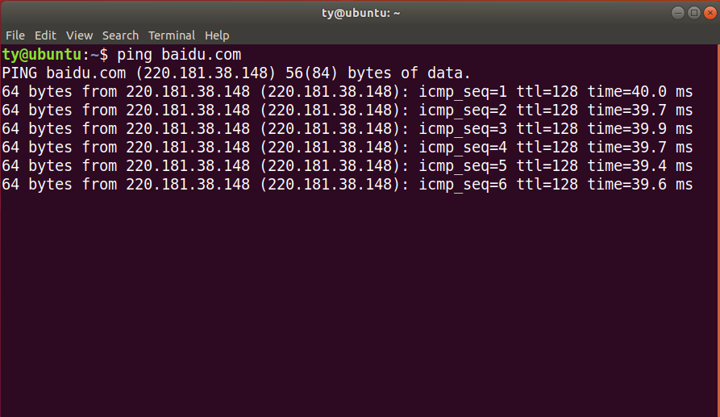
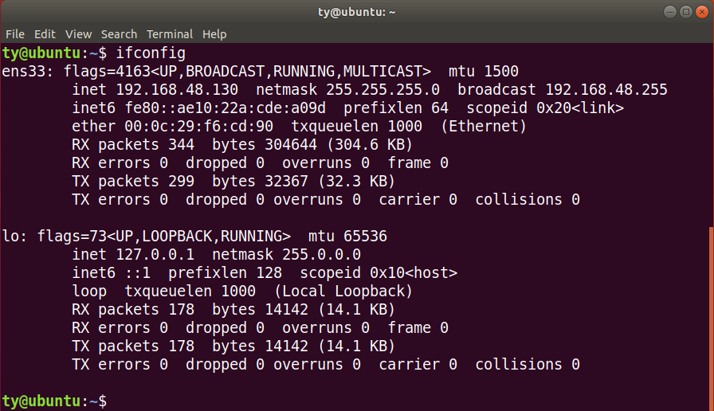
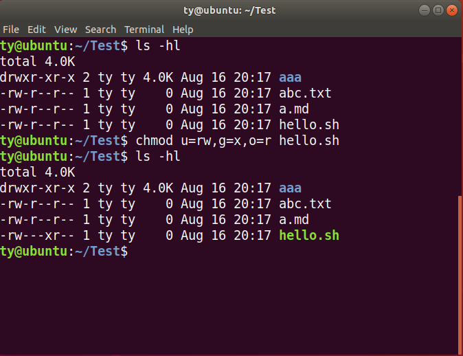
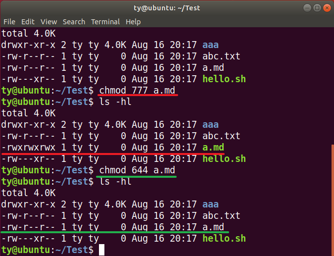

常用Linux命令
Linux常用操作¶
- ls
- clear
- cd
- pwd
- mkdir
- rm
- cp
- mv
- touch
ls 文件及文件夹查看¶
ls是英文单词list的简写，其功能为列出目录的内容，是用户最常用的命令之一，它类似于DOS下的dir命令。Linux文件或者目录名称最长可以有265个字符，“.”代表当前目录，“..”代表上一级目录，以“.”开头的文件为隐藏文件，需要用 -a 参数才能显示。
常用示例：
ls -a 查看当前所有文件和目录，包含隐藏文件和目录
ls -l 以列表形式查看所有文件和目录
ll 等同于ls -al 即等同于以上两个命令结合
ls常用参数：
| 参数 | 含义 |
|---|---|
| -a | 显示指定目录下所有子目录与文件，包括隐藏文件 |
| -l | 以列表方式显示文件的详细信息 |
| -h | 配合 -l 以人性化的方式显示文件大小，即文件大小可以用mb |
poplar@PoplarTang:~/Lesson/Test$ ls -al
total 0
drwxrwxrwx 1 poplar poplar 512 May 9 10:59 .
drwxrwxrwx 1 poplar poplar 512 May 9 10:59 ..
drwxrwxrwx 1 poplar poplar 512 May 9 10:59 TestDir
drwxrwxrwx 1 poplar poplar 512 May 9 10:59 a
-rw-rw-rw- 1 poplar poplar 0 May 9 10:59 haha.txt
输出信息含义：

通配符：
与DOS下的文件操作类似，在Unix/Linux系统中，也同样允许使用特殊字符来同时引用多个文件名，这些特殊字符被称为通配符。只要和文件或文件夹描述相关的地方几乎都可以使用通配符。常用的通配符方式
ls te*查看所有以te开头的文件及目录ls *.txt查看所有以.txt结尾的文件及目录ls te[sx]t将匹配test或text
clear 清屏命令¶
有时候控制台内容太多，可以用clear命令清空一下控制台
也可使用快捷键：Ctrl + l ( “l” 为字母L的小写 )。
cd 切换目录¶
在使用Unix/Linux的时候，经常需要更换工作目录。cd命令可以帮助用户切换工作目录。Linux所有的目录和文件名大小写敏感
cd（change directory）后面可跟绝对路径，也可以跟相对路径。如果省略目录，则默认切换到当前用户的主目录。
| 命令 | 含义 |
|---|---|
| cd | 切换到当前用户的主目录(/home/用户目录)， 用户登陆时，默认的目录就是用户的主目录。 |
| cd ~ | 切换到当前用户的主目录(/home/用户目录) |
| cd . | 切换到当前目录 |
| cd .. | 切换到上级目录 |
| cd - | 可进入上次所在的目录 |
| cd / | 切换到系统根目录/ |
如果路径是从根路径开始的，则路径的前面需要加上 “ / ”，如 “ /mnt ”，通常进入某个目录里的文件夹，前面不用加 “ / ”。
pwd 显示当前路径¶
使用pwd命令可以显示当前的工作目录，该命令很简单，但又很常用，直接输入pwd即可，后面不带参数。
ty@ubuntu:~/Downloads$ pwd
/home/ty/Downloads
mkdir 创建目录¶
通过mkdir命令可以创建一个新的目录。参数-p可递归创建目录。
需要注意的是新建目录的名称不能与当前目录中已有的目录或文件同名，并且目录创建者必须对当前目录具有写权限。
常用示例：
mkdir TestDirmkdir -p a/b/c/d
poplar@PoplarTang:~/Lesson/Test$ mkdir TestDir
poplar@PoplarTang:~/Lesson/Test$ mkdir -p a/b/c/d
poplar@PoplarTang:~/Lesson/Test$ tree
.
├── TestDir
├── a
│ └── b
│ └── c
│ └── d
└── haha.txt
5 directories, 1 file
touch 创建文件¶
用户可以通过touch来创建一个空的文件：
touch hello.txt
说明：
- 会在当前路径下创建名字为hello.txt的空文件
- Linux系统中没有严格的后缀（格式），所以创建文件时可以命名为任意的文件名
rm 删除文件¶
可通过rm删除文件或目录。使用rm命令要小心，因为文件删除后不能恢复。为了防止文件误删，可以在rm后使用-i参数以逐个确认要删除的文件。
常用参数及含义如下表所示：
| 参数 | 含义 |
|---|---|
| -f | 强制删除，忽略不存在的文件，无需提示 |
| -r | 递归地删除目录下的内容，删除文件夹时必须加此参数 也可使用 rmdir删除一个空目录 |
常用示例：
rm xxx.txt aaa.txt 删除文件：（可一次删除多个）
rm -r test_dir删除目录
rmdir test_dir 使用rmdir也可以删除目录, 但必须保证被删除目录里为空
cp 拷贝文件及目录¶
cp（copy）命令的功能是将给出的文件或目录复制到另一个文件或目录中，相当于DOS下的copy命令。
常用选项说明：
| 选项 | 含义 |
|---|---|
| -a | 该选项通常在复制目录时使用，它保留链接、文件属性，并递归地复制目录 简单而言，保持文件原有属性。 |
| -r | 若给出的源文件是目录文件，则cp将递归复制该目录下的所有子目录和文件 目标文件必须为一个目录名。 |
常用示例：
cp file.txt abc/将当前目录的file.txt拷贝到abc目录
cp abc/*.txt . 将abc目录下的所有txt文件拷贝到当前目录
cp -r abc aaa 将abc目录拷贝为aaa目录（包含所有子目录及文件）
mv 移动、重命名¶
用户可以使用mv命令来移动文件或目录，也可以给文件或目录重命名。
常用选项说明：
| 选项 | 含义 |
|---|---|
| -f | 禁止交互式操作，如有覆盖也不会给出提示 |
| -i | 确认交互方式操作，如果mv操作将导致对已存在的目标文件的覆盖 系统会询问是否重写，要求用户回答以避免误覆盖文件 |
| -v | 显示移动进度 |
常用示例：
mv a.md abc.txt 将a.md重命名为abc.txt
mv abc.txt ./aaa 将abc.txt移动到当前的aaa目录中
echo 控制台输出¶
echo "HelloWorld"
向控制台输出HelloWorld信息
> 输出重定向¶
Linux允许将命令执行结果重定向到一个文件，本应显示在终端上的内容保存到指定文件中。
ls > test.txt
test.txt 如果不存在，则创建，存在则覆盖其内容
注意：>输出重定向会覆盖原来的内容，>>输出重定向则会追加到文件的尾部
cat 查看&合并文件内容¶
cat xxx.py 可以用来快速查看某个文件内容，输出到控制台
cat test.txt >> haha.txt 将test.txt的内容追加到haha.txt中
cat 1.txt 2.txt > 1_2.txt将1.txt 2.txt内容合并到1_2.txt中
tar 归档管理¶
计算机中的数据经常需要备份，tar是Unix/Linux中最常用的备份工具，此命令可以把一系列文件归档到一个大文件中，也可以把档案文件解开以恢复数据。
tar使用格式：
tar [参数] 打包文件名 文件
tar命令很特殊，其参数前面可以使用“-”，也可以不使用。
常用参数：
| 参数 | 含义 |
|---|---|
| -c | 生成档案文件，创建打包文件 |
| -x | 解开档案文件 |
| -z | 压缩/解压, 此选项只针对tar.gz为结尾的文件 |
| -v | 列出归档解档的详细过程，显示进度 |
| -t | 列出档案中包含的文件 |
| -f | 指定档案文件名称，f后面一定是.tar文件，所以必须放选项最后 |
注意：除了f需要放在参数的最后，其它参数的顺序任意。
常用命令：
- 打包并压缩
当前目录所有文件
tar -czvf xxx.tar.gz *以.txt结尾的文件
tar -czvf xxx.tar.gz *.txt打包指定目录或文件
tar -czvf xxx.tar.gz my-file my-dir
- 解压缩包
解包到当前目录：
tar -xzvf xxx.tar.gz解包到指定目录：
tar -xzvf xxx.tar.gz -C my-dir（需要先创建my-dir目录）
zip、unzip 文件压缩解压¶
通过zip压缩文件的目标文件不需要指定扩展名，默认扩展名为zip。
压缩文件：zip [-r] 目标文件(没有扩展名) 源文件
文件：
zip bak *当前目录所有文件，也可以指定文件文件夹：
zip -r bak *当前目录所有文件&目录递归
解压文件：unzip -d 解压后目录文件 压缩文件
解压到指定目录：
unzip -d ./target_dir bak.zip解压到当前目录：
unzip bak.zip
scp 远程拷贝文件¶
- 从远程复制文件到本地
scp root@192.168.16.66:/home/poplar/xxx.tar.gz /home/test/
- 从本地复制文件到远程
scp /home/test/xxx.png root@192.168.16.66:/home/poplar/
- 从远程复制目录到本地 -r
scp -r root@192.168.16.66:/home/poplar/day01 /home/test/
- 从本地复制目录到远程 -r
scp -r /home/test/day01 root@192.168.16.66:/home/poplar/
wget 文件下载¶
- 下载普通文件
wget http://p1.qhimgs4.com/t01ce0387e64e3428ca.jpg
- 以指定文件名保存文件
wget -O girl.jpg http://p1.qhimgs4.com/t01ce0387e64e3428ca.jpg
- 断点续传
wget -c http://p1.qhimgs4.com/t01ce0387e64e3428ca.jpg
tree 目录树状结构¶
使用tree命令可以查看指定目录的树状结构
poplar@PoplarTang:~/Lesson/day01$ tree
.
├── Test.sh
├── TestDir
│ └── test.sh
├── a
│ └── b
│ └── c
│ └── d
│ └── haha.txt
├── haha.txt
├── hhh.sh
├── pics
│ ├── 20190213185356_sczsq.jpg
│ ├── 20190216212132_uvtxf.thumb.700_0.gif
│ └── url-list.txt
├── test.txt
└── ttt.txt
Warning
有的系统默认未安装tree，需要先使用sudo apt install tree安装后才可以使用tree命令
which 查看命令位置¶
有时我们想知道被执行的命令在哪个目录，以方便切换或更新不同版本，如Python。可以使用which 命令
poplar@PoplarTang:~/Lesson$ which python
/usr/bin/python
poplar@PoplarTang:~/Lesson$ which ls
/bin/ls
reboot、shutdown 关机重启¶
| 命令 | 含义 |
|---|---|
| reboot | 重新启动操作系统 |
| shutdown –r now | 重新启动操作系统，shutdown会给别的用户提示 |
| shutdown -h now | 立刻关机，其中now相当于时间为0的状态 |
| shutdown -h 20:25 | 系统在今天的20:25 会关机 |
| shutdown -h +10 | 系统再过十分钟后自动关机 |
网络相关命令¶
ping 测试网络是否联通¶
可以执行ping baidu.com以查看是否连接了互联网
可以执行ping 192.168.1.123以查看局域网中的其他设备是否联通

ifconfig 查看ip地址¶

ssh 连接远程电脑¶
ssh root@192.168.37.123
提示是否接受签名证书：输入yes，回车即可.
如果远程电脑是新装电脑，有可能会因为ssh服务证书问题而无法连接，可以通过在远程电脑上重装ssh服务解决。
1. 重装ssh服务，生成证书
sudo apt-get remove openssh-server
sudo apt-get install openssh-server
2. 重启ssh服务
sudo service ssh restart
3. 检查sshd服务是否存活
sudo service ssh status
用户及权限操作¶
chmod 修改文件权限¶
使用ls -l可以查看文件&目录的权限
使用chmod可以修改文件权限
有两种使用格式：字母法与数字法。
字母法权限修改：rwx¶
chmod u/g/o/a +/-/= rwx 文件
| [ u/g/o/a ] | 含义 |
|---|---|
| u | user 表示该文件的所有者 |
| g | group 表示与该文件的所有者属于同一组( group )者，即用户组 |
| o | other 表示其他以外的人 |
| a | all 表示这三者皆是 |
| [ ±/= ] | 含义 |
|---|---|
| + | 增加权限 |
| - | 撤销权限 |
| = | 设定权限 |
| rwx | 含义 |
|---|---|
| r | read 表示可读取，对于一个目录，如果没有r权限，那么就意味着不能通过ls查看这个目录的内容。 |
| w | write 表示可写入，对于一个目录，如果没有w权限，那么就意味着不能在目录下创建新的文件。 |
| x | excute 表示可执行，对于一个目录，如果没有x权限，那么就意味着不能通过cd进入这个目录。 |
- 常用的操作如下
# 修改一个文件所属用户的权限为可读可写
chmod u=rw 1.py
# 为文件添加所有人可执行权限
chmod a+x 1.py
如果需要同时进行设定拥有者、同组者以及其他人的权限，参考如下：

数字法权限修改：421¶
“rwx” 这些权限也可以用数字来代替
| 字母 | 说明 |
|---|---|
| r | 读取权限，数字代号为 "4" |
| w | 写入权限，数字代号为 "2" |
| x | 执行权限，数字代号为 "1" |
| - | 不具任何权限，数字代号为 "0" |
如执行：chmod u=rwx,g=rx,o=r filename 就等同于：chmod u=7,g=5,o=4 filename
chmod 751 file：
- 文件所有者：读、写、执行权限
- 同组用户：读、执行的权限
- 其它用户：执行的权限

注意：
如果想递归所有目录加上相同权限，需要加上参数“ -R ”。
如：chmod 777 test/ -R 递归 test 目录下所有文件加 777 权限
passwd 修改用户密码¶
在Unix/Linux中，超级用户可以使用passwd命令为普通用户设置或修改用户密码。用户也可以直接使用该命令来修改自己的密码，而无需在命令后面使用用户名。
- 非超级用户只能修改自己的密码
poplar@PoplarTang:~$ passwd
Old password:******
New password:*******
Re-enter new password:*******
- 超级管理员用户root，可以修改其他用户密码
root@PoplarTang:/home/poplar# passwd poplar
New password:*******
Re-enter new password:*******
为了系统安全起见，要使用比较复杂的口令，最好使用8位以上的口令，并且口令中包含有大写、小写字母和数字
whoami 我是谁¶
whoami可以获取当前登录账户的用户名
exit 退出登录账户¶
- 如果是图形界面，退出当前终端；
- 如果是使用ssh远程登录，退出登陆账户；
- 如果是切换后的登陆用户，退出则返回上一个登陆账号。
su 切换到普通用户¶
su username 切换到username用户，当前路径不变
su - username切换到username用户，当前路径变更为/home/username
sudo su 切换到管理员账号¶
sudo su 或sudo -s Linux 下切换到root的命令
系统信息命令¶
查看系统版本¶
- 发行版本号
lsb_release -a
- 内核版本及系统位数
uname -a
- 内核版本及gcc版本
cat /proc/version
查看硬件信息¶
- cpu信息
cat /proc/cpuinfo or lscpu
- 内存信息
sudo dmidecode -t memory
运行时信息¶
top实时CPU&内存使用情况free当前内存占用情况ps -aux查看当前进程状态（CPU、内存占用、开启时间）kill根据进程pid杀死指定进程，可以配合参数-9强制杀死
其他命令手册参考¶
Linux命令大全：http://man.linuxde.net/
菜鸟Linux命令：https://www.runoob.com/linux/linux-command-manual.html